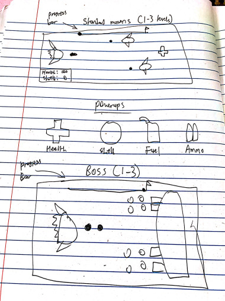

Galaxy Enforcer
Concept
-
Galaxy Enforcer will be a side scrolling game that involves the user controlling a spaceship while enemies spawn in to try and defeat you.
With proper use of resources and materials, the user must try and reach the boss and defeat them in order to save the galaxy. Will you be able to destroy all of your enemies
of will you be the one that is destroyed?
Genre
-
The game can be classified as a "shoot em up" subgenre within the main shooter and action genres. The primary focus involves the player shooting at enemies to damage and destroy them.
Platform
-
This game will be a desktop/computer only game. This might change to include mobile if I can figure out the right dimensions and responsiveness.
Story
-
The player will be a space patrol officer in charge of protecting the galaxy. A recent organization of space bandits have recently been going on a rampage and looting multiple planets of their resources.
The player must take down all of the bandit henchmen in order to reach their boss. Only after the boss's defeat will the galaxy be saved and be in peace.
Aesthetics
-
This game will take place within space and all of the objects in the game will have a cartoonish or silly look to them. The sound effects will mostly be 8-bit while the background music
will have some sort of tense and fast paced feeling to it.
Sound effects include firing your laser, picking up powerups, dying, reaching a new level, getting hit, etc.
Gameplay
-
The player controls a spaceship and will either try to dodge all of the incoming ships or fire projectiles to destroy them. Resource management will be included as the player tries to maintain fuel. These resources
can be picked up as they will sometimes spawn in place of an enemy. Other powerups can be picked up including health, a shield, etc. Players must beat the boss of the level in order to progress onto the next and continue on until
they reach the final boss.
-
The arrow keys and WASD will move the space ship in multiple directions. Spacebar can be used to fire projectiles.
-
As soon as the user presses the start button on the main menu, they will be brought to a page where it will list the basic instructions and powerups they can find in the game along with the objective.
Images

Afterwards
-
This project overall was something I had a lot of fun doing. I will probably work on this project a little more over Winter break or create a new once using what I learned from this. For the most part, I added everything I wanted from when I planned this game
into the final product. I had originally planned on using more sprites and spritesheets, but I wanted to save some time and I also wanted to focus on getting the basic mechanics to work first before I thought about that. I had thought about an ammo and reloading system but I figured that
wouldn't seem right in a game like this so I just got rid of that idea. I also had plans for additional levels along with new enemies and bosses for each one, but due to time contraints I could only do one.
-
I found it interesting how PIXI and JavaScript works in comparison to other codes. After the enemies were destroyed, bullets were still created at their positions and I didn't know why. I later found out that if you code it so that if their "isAlive" status is equal to false
it does nothing. You have to use "!" instead of equal to false which I found weird since it would probably work in other programming languages.
-
I had fun finding audio and sound effects for this game, but at the same time I can worried that it might be too much for a small game like this.
-
Funny enough, this idea was what I wanted to do back in high school in a programming language called "Processing". But, back then I was still completely new to programming and I couldn't do some of the ideas that I wanted.
Therefore, I feel a sense of pride after this project because I was able to do something that I couldn't do a few years ago.
-
I didn't want the game to be too difficult since it was just a simple, small project for a class so people should be able to easily complete this game.
-
My process was to first get the player function properly. The main things I did were using keyboard inputs the move the player and shooting bullets at the right direction and making it move properly.
Then, I decided to make a little background by creating circles that fly past the screen to make it look like stars moving in the background to create a sense of movement for the player.
From there, I then went and created enemies by having them spawn outside the canvas at a random location and have them move to the right. Then for the enemie's projectiles, I coded it so that it and other functions
can be called a specific times. The powerups were simple since their movement were similar to the enemies but have different functions and purposes for the player. I also created life bars using rectangles but I found that it's size and positioning
can be inconsistent when it changes during the game. Lastly, I worked on the boss and I found that since it is constantly changing it's y position. Where the bullets come from can be inconsistent as well, so I experimented and tried different positions to make it
look as natural as possible. I finished everything by finding good audios from the sources below and I used a mixture of basic arcade sound effects to music soundtracks that might fit the theme of this game.
Resources
About
-
I am Winson Weng and I am a second year Game Design and Development student at RIT. I've always loved designing and playing video games ever since I was a kid because of the amount of creativity and flexibility you can have with them.
Some side hobbies include 3D modeling props that I see in some games I play or going out and fishing with my family. Right now I am currently working at my family's restaurant while also creating
some side projects in C# and eventually JavaScript over break.